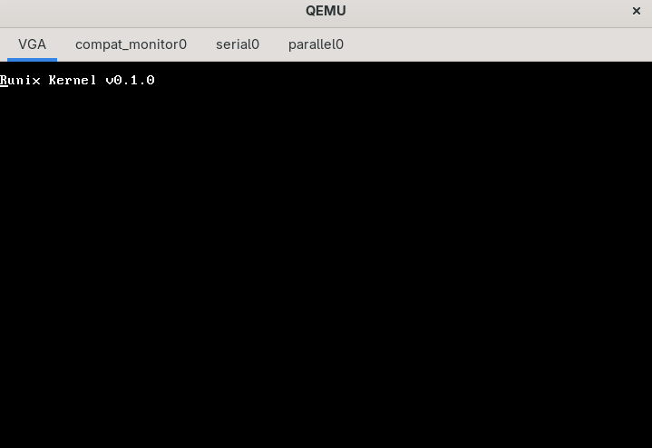

Предупреждение
Предупреждение
⚠️ Runix находится на этапе разработки
Этот самоучитель и сама операционная система Runix находятся в активной разработке.
Все главы и примеры, которые вы видите, могут обновляться и дополняться со временем.
Мы постепенно расширяем функциональность Runix: от базовых драйверов и минимального ядра до планировщика задач, файловой системы и пользовательских утилит.Ваши предложения, правки и эксперименты с Runix приветствуются — этот проект создаётся не только для обучения, но и как живой ресурс для изучения системного программирования на Rust.
💡 Вы можете следить за развитием Runix и вносить предложения на GitHub.
Об Авторе
Об Авторе
Кирилл, Чернигов, Украина.
Первое знакомство с компьютером — шесть лет, 2014 год. Windows 7 с её багами и ошибками, которые приходилось исправлять самостоятельно. Это привело к интересу к тому, как системы работают на низком уровне.
Этот проект — попытка применить накопленные знания на практике, создав операционную систему с нуля на языке, который сочетает контроль над железом с гарантиями безопасности.
Начал изучать Rust в 2024 из-за интереса к системному программированию. Особенно привлекают гарантии безопасности памяти и zero-cost абстракции.
Выбор операционной системы как проекта обусловлен желанием понять все уровни абстракции — от аппаратных прерываний до пользовательских интерфейсов. Это наиболее комплексная задача в программировании.
Помимо создания работающей системы, цель — сделать материалы доступными для других, которые хотят разобраться в устройстве ОС.
Введение
Создание операционной системы на Rust
Введение
Runix — исследовательский проект по созданию учебной операционной системы на языке Rust. Название образовано от сочетания "Rust" и "Unix", отражая как технологическую основу, так и философскую преемственность от классических UNIX-подобных систем.
Цель проекта — создание полноценной, но упрощённой операционной системы, которая послужит практическим учебным пособием для понимания фундаментальных принципов работы компьютеров. В отличие от промышленных систем, Runix фокусируется на ясности реализации, обучающей ценности и возможности модификации каждого компонента.
Философия проекта
Образовательная направленность
Runix разрабатывается как инструмент обучения. Каждый модуль системы сопровождается подробными комментариями, объясняющими не только "как", но и "почему" реализован именно таким образом. Система спроектирована так, чтобы её можно было разобрать на части и собрать заново, меняя алгоритмы и структуры данных.
От простого к сложному
Разработка ведётся поэтапно, начиная с элементарных компонентов и постепенно добавляя сложность:
- Базовый уровень: загрузка, вывод на экран, обработка прерываний
- Фундаментальные механизмы: управление памятью, планирование задач
- Драйверы и подсистемы: работа с аппаратурой, файловые системы
- Пользовательское пространство: системные вызовы, базовые утилиты
Практика вместо теории
Runix заменяет абстрактные схемы из учебников работающим кодом, который можно запустить в эмуляторе, модифицировать и наблюдать результаты изменений в реальном времени.
Архитектурные решения
Язык реализации: Rust
Rust выбран не только как современный системный язык, но и как инструмент, который делает сложные концепции более доступными:
- Безопасность памяти без сборщика мусора
- Выразительная система типов для моделирования системных концепций
- Нулевая стоимость абстракций для сохранения производительности
Целевая платформа: x86_64
Архитектура x86_64 выбрана как наиболее распространённая и хорошо документированная, с обширной инструментальной поддержкой для отладки и эмуляции.
Структура проекта
Этап 1: Фундамент (загрузка и базовые службы)
- Загрузчик: минимальная инициализация, переход в 64-битный режим
- Драйвер вывода: консольный интерфейс для отладки и взаимодействия
- Обработчики прерываний: таймер, клавиатура, исключения
Этап 2: Ядро (основные механизмы ОС)
- Управление памятью: страничная организация, аллокаторы ядра
- Планировщик задач: вытесняющая многозадачность, переключение контекста
- Синхронизация: примитивы для многозадачной среды
Этап 3: Подсистемы (расширение функциональности)
- Файловая система: простая структура для хранения данных
- Драйверы устройств: диск, сеть, графика
- Системные вызовы: интерфейс для пользовательских программ
Этап 4: Пользовательское пространство
- Базовые утилиты: командный интерфейс, редактор, отладчик
- Демонстрационные программы: примеры использования системных возможностей
- Документация: руководства по архитектуре и API
Методология разработки
Инкрементальный подход
Каждая версия Runix — полностью работоспособная система, просто с разным уровнем функциональности. Это позволяет видеть прогресс и понимать, как новые компоненты интегрируются с существующими.
Открытость и документирование
Все решения фиксируются с объяснениями:
- Альтернативы: какие варианты рассматривались и почему отвергнуты
- Компромиссы: между производительностью, сложностью и ясностью
- Ошибки: найденные проблемы и способы их решения
Тестирование и верификация
Каждый компонент сопровождается:
- Модульными тестами: проверка в изоляции
- Интеграционными тестами: проверка взаимодействия
- Демонстрационными сценариями: примеры использования
Ожидаемые результаты
Практическая ценность
- Рабочая операционная система, которую можно запустить на реальном железе или в эмуляторе
- Образовательный ресурс с подробными объяснениями архитектурных решений
- Платформа для экспериментов с алгоритмами планирования, управления памятью и другими системными механизмами
Научно-методическая ценность
- Анализ применимости Rust для системного программирования
- Сравнение архитектурных подходов в реализации ОС
- Методика обучения системному программированию через практику
Заключение
Runix — это не попытка создать очередную универсальную операционную систему. Это образовательный проект, целью которого является создание ясного, понятного и модифицируемого примера того, как работают компьютеры на самом фундаментальном уровне.
Проект демонстрирует, что создание операционной системы — это не магия, доступная лишь избранным, а структурированная инженерная задача, которую можно понять и выполнить, двигаясь последовательно от простого к сложному.
Через разработку Runix мы не только создаём ещё одну операционную систему, но и создаём инструмент, который поможет другим понять, как создаются операционные системы.
Создание минимального исполняемого файла на Rust для системного программирования
Начало
Начало
Создание минимального исполняемого файла на Rust для системного программирования
Создание минимального ядра на Rust Практический старт для Runix
Создание минимального исполняемого файла на Rust для системного программирования
Создание минимального исполняемого файла на Rust для системного программирования
Введение
Первый шаг в создании операционной системы на Rust — разработка исполняемого файла, который не зависит от стандартной библиотеки и окружения операционной системы. Такой файл может выполняться напрямую на "голом железе", без поддержки со стороны существующей ОС. Это фундаментальное требование для ядра операционной системы, которое само должно предоставлять базовые сервисы, а не полагаться на них.
В отличие от обычных программ Rust, которые автоматически используют стандартную библиотеку и среду выполнения, системное программирование требует явного отказа от этих абстракций. Это позволяет получить полный контроль над аппаратным обеспечением, но также накладывает ответственность за реализацию базовых механизмов, которые в обычных условиях предоставляются операционной системой.
Отказ от стандартной библиотеки
Стандартная библиотека Rust предоставляет удобные абстракции, но большинство из них зависят от функций операционной системы: файловые операции, сетевое взаимодействие, управление памятью через кучу, многопоточность. Для ядра ОС эти зависимости неприемлемы, поскольку само ядро должно предоставлять эти сервисы.
Для отключения стандартной библиотеки используется атрибут #![no_std]:
#![allow(unused)]
#![no_std]
fn main() {
// Больше нет доступа к std::*
// Но core и alloc по-прежнему доступны
}Этот атрибут указывает компилятору, что программа не должна связываться со стандартной библиотекой. Однако сохраняется доступ к библиотеке core, которая содержит фундаментальные типы и трейты, не зависящие от ОС: Option, Result, итераторы, примитивные типы и т.д.
Обработка паники
В обычных программах Rust паника вызывает распечатку сообщения об ошибке и раскрутку стека (unwinding). Оба этих механизма зависят от стандартной библиотеки и операционной системы. В системном программировании необходимо предоставить собственную реализацию:
#![allow(unused)]
fn main() {
use core::panic::PanicInfo;
#[panic_handler]
fn panic(_info: &PanicInfo) -> ! {
// В ядре ОС мы не можем полагаться на стандартные
// механизмы обработки паники
// Здесь можно, например, вывести сообщение на экран
// или перезагрузить систему
loop {} // Бесконечный цикл как простейшая заглушка
}
}Паника в системном коде должна рассматриваться как критическая ошибка, часто требующая остановки системы или перезагрузки.
Отказ от раскрутки стека
Раскрутка стека при панике — сложный процесс, требующий поддержки со стороны операционной системы. Для системного программирования обычно используется стратегия "abort" — немедленное прерывание выполнения без очистки ресурсов:
#![allow(unused)]
fn main() {
Cargo.toml
[profile.dev]
panic = "abort"
[profile.release]
panic = "abort"
}Это уменьшает размер исполняемого файла и устраняет зависимость от библиотек раскрутки стека.
Переопределение точки входа
В обычной программе Rust выполнение начинается с функции main, которая вызывается средой выполнения. В системном программировании среда выполнения отсутствует, поэтому необходимо определить собственную точку входа:
#![allow(unused)]
#![no_main] // Отключаем стандартную точку входа
fn main() {
#[no_mangle] // Сохраняем имя функции для компоновщика
pub extern "C" fn _start() -> ! {
// Эта функция вызывается напрямую загрузчиком
// Она не должна возвращаться
loop {}
}
}Имя _start является соглашением, ожидаемым большинством загрузчиков и компоновщиков. Функция помечается как расходящаяся (-> !), поскольку после её выполнения системе нечего делать — либо управление передаётся другим компонентам, либо система останавливается.
Решение проблем компоновщика
При компиляции независимого исполняемого файла возникают ошибки компоновщика, поскольку он ожидает наличия стандартной среды выполнения C (crt0). Существует два основных подхода решения этой проблемы:
Компиляция для "голого железа"
cargo build --target thumbv7em-none-eabihf
Использование целевой платформы без операционной системы (с none в названии) указывает компоновщику не ожидать стандартных библиотек.
Создание кастомной целевой платформы
Для x86_64 архитектуры создаётся файл x86_64-unknown-none.json:
#![allow(unused)]
fn main() {
{
"llvm-target": "x86_64-unknown-none",
"data-layout": "e-m:e-i64:64-f80:128-n8:16:32:64-S128",
"arch": "x86_64",
"target-endian": "little",
"target-pointer-width": "64",
"target-c-int-width": "32",
"os": "none",
"executables": true,
"linker-flavor": "ld.lld",
"linker": "rust-lld",
"panic-strategy": "abort",
"disable-redzone": true,
"features": "-mmx,-sse,-sse2,-sse3,-ssse3,-sse4.1,-sse4.2,-3dnow,-3dnowa,-avx,-avx2"
}
}Минимальный пример
#![allow(unused)]
#![no_std]
#![no_main]
fn main() {
use core::panic::PanicInfo;
#[panic_handler]
fn panic(_info: &PanicInfo) -> ! {
loop {}
}
#[no_mangle]
pub extern "C" fn _start() -> ! {
// Это минимальный исполняемый файл
// На практике здесь будет инициализация
// и запуск основных компонентов системы
loop {}
}
}Соответствующий Cargo.toml:
#![allow(unused)]
fn main() {
[package]
name = "kernel"
version = "0.1.0"
edition = "2021"
[profile.dev]
panic = "abort"
[profile.release]
panic = "abort"
[dependencies]
Пока пусто, позже добавятся необходимые крейты
}Значение для проекта Runix
Создание минимального исполняемого файла — первый и необходимый шаг для Runix. Он демонстрирует:
-
Независимость от ОС: Получен код, который может выполняться без поддержки существующей операционной системы.
-
Контроль над исполнением: Определена собственная точка входа, с которой начинается выполнение системы.
-
Минимальные зависимости: Устранены зависимости от стандартных библиотек и сред выполнения.
-
Фундамент для расширения: На этой основе можно строить более сложные компоненты: менеджер памяти, обработчики прерываний, драйверы устройств. Этот минимальный исполняемый файл, хотя и не делает ничего полезного сам по себе, служит доказательством концепции и основой, на которой будет построена вся остальная система. Каждый следующий компонент Runix будет добавляться к этому фундаменту, постепенно превращая бесконечный цикл в полнофункциональную операционную систему.
Следующий шаг — настройка компоновки для x86_64 архитектуры и добавление возможности вывода информации на экран, что позволит наблюдать за выполнением системы и отлаживать её по мере развития.
Создание минимального ядра на Rust Практический старт для Runix
Создание минимального ядра на Rust Практический старт для Runix
Создание минимального ядра на Rust Практический старт для Runix
Введение: От теории к практике
В предыдущих материалах мы обсуждали философию проекта Runix и создали минимальный независимый исполняемый файл. Теперь пришло время превратить эту основу в настоящее загружаемое ядро, способное взаимодействовать с пользователем. Наша цель — создать систему, которая при загрузке выводит на экран классическое "Hello World!".
Этот этап — критически важный мост между абстрактной концепцией и работающей системой. Мы переходим от компиляции кода для "голого железа" к созданию образа, который может быть загружен реальным компьютером.
Понимание процесса загрузки: Что происходит при включении питания
Прежде чем погрузиться в код, давайте разберёмся, как компьютер загружает операционную систему. Этот процесс напоминает эстафету, где управление передаётся от одного компонента к другому:
Фазы загрузки x86_64
- Прошивка (BIOS/UEFI) — резидентный код в ПЗУ материнской платы
- Выполняет самодиагностику (POST)
- Инициализирует базовое оборудование
- Ищет загрузочное устройство
- Загрузчик — небольшая программа в начале диска
- Загружает ядро в память
- Переводит процессор в 64-битный режим
- Передаёт управление ядру
- Ядро — наша операционная система
- Инициализирует подсистемы
- Запускает основные службы
- Передаёт управление пользовательским программам
Выбор стратегии загрузки
Для Runix мы выбрали простейший путь — использование BIOS. Причины:
-
Универсальность: Поддерживается на любом x86-совместимом оборудовании
-
Простота: Меньше начальных сложностей для образовательного проекта
-
Прозрачность: Позволяет лучше понять фундаментальные механизмы
_Примечание: Поддержка UEFI планируется на более поздних этапах развития Runix.
Настройка инструментария: Подготовка рабочего окружения
Установка необходимых компонентов Rust
# Устанавливаем nightly-версию Rust
rustup install nightly
# Устанавливаем инструменты для работы с bare-metal
rustup component add rust-src --toolchain nightly
rustup component add llvm-tools-preview
Создание целевой платформы для bare-metal
Поскольку стандартные цели Rust предназначены для работы под управлением операционной системы, нам необходимо определить собственную. Создаём файл x86_64-runix.json:
#![allow(unused)]
fn main() {
{
"llvm-target": "x86_64-unknown-none",
"data-layout": "e-m:e-p270:32:32-p271:32:32-p272:64:64-i64:64-i128:128-f80:128-n8:16:32:64-S128",
"arch": "x86_64",
"target-endian": "little",
"target-pointer-width": 64,
"target-c-int-width": 32,
"os": "none",
"executables": true,
"linker-flavor": "ld.lld",
"linker": "rust-lld",
"panic-strategy": "abort",
"disable-redzone": true,
"features": "-mmx,-sse,-sse2,-sse3,-ssse3,-sse4.1,-sse4.2,-3dnow,-3dnowa,-avx,-avx2",
"stack-protector": false
}
}Ключевые особенности нашей конфигурации:
-
"os": "none"— указывает на отсутствие операционной системы -
linker: "rust-lld"— используем кросс-платформенный компоновщик от LLVM -
panic-strategy: "abort"— отключаем раскрутку стека при панике -
disable-redzone: true— необходимо для корректной обработки прерываний -
Отключение SIMD-инструкций — упрощает сохранение состояния процессора
Настройка Cargo для системной разработки
Создаём .cargo/config.toml:
#![allow(unused)]
fn main() {
[unstable]
build-std = ["core", "compiler_builtins"]
build-std-features = ["compiler-builtins-mem"]
[build]
target = "x86_64-runix.json"
[target.'cfg(target_os = "none")']
runner = "bootimage runner"
}Эта конфигурация позволяет:
-
Перекомпилировать
coreбиблиотеку для нашей цели -
Включить базовые функции работы с памятью
-
Установить цель по умолчанию
-
Настроить автоматический запуск в QEMU через
cargo run
Минимальное рабочее ядро
Структура кода
#![allow(unused)]
fn main() {
// src/main.rs
#![no_std]// Не используем стандартную библиотеку
#![no_main] // Определяем свою точку входа
use core::panic::PanicInfo;
/// Обработчик паники для bare-metal окружения
#[panic_handler]
fn panic(_info: &PanicInfo) -> ! {
// В реальном ядре здесь будет логирование и безопасное завершение
loop {}
}
/// Точка входа, вызываемая загрузчиком
#[no_mangle] // Сохраняем имя для компоновщика
pub extern "C" fn _start() -> ! {
// Адрес буфера VGA в памяти
let vga_buffer = 0xb8000 as *mut u8;
// Сообщение для вывода
let hello = b"Runix Kernel v0.1.0";
// Выводим каждый символ в буфер VGA
for (i, &byte) in hello.iter().enumerate() {
unsafe {
// Символ
*vga_buffer.offset(i as isize * 2) = byte;
// Атрибут цвета (светло-голубой на чёрном)
*vga_buffer.offset(i as isize * 2 + 1) = 0x0B;
}
}
// Бесконечный цикл — ядро не должно завершаться
loop {}
}
}
Объяснение ключевых моментов
- Буфер VGA — специальная область памяти по адресу
0xb8000, которая напрямую отображается на экран в текстовом режиме. - Структура ячейки — каждый символ занимает 2 байта:
-
Байт 0: Код символа ASCII
-
Байт 1: Атрибуты (цвет фона и текста)
- Блоки
unsafe— необходимы для работы с сырыми указателями. В дальнейшем мы инкапсулируем эту логику в безопасные абстракции.
Сборка и запуск
Установка дополнительных инструментов
# Утилита для создания загрузочных образов
cargo install bootimage
Конфигурация проекта
#![allow(unused)]
fn main() {
Cargo.toml
[package]
name = "kernel"
version = "0.1.0"
edition = "2021"
[dependencies]
bootloader = "0.9"
[profile.dev]
panic = "abort"
[profile.release]
panic = "abort"
}Команды для сборки и запуска
Стандартная сборка
cargo build
Создание загрузочного образа
cargo bootimage
Сборка и запуск в QEMU
cargo run
Ручной запуск в QEMU
qemu-system-x86_64 -drive format=raw,file=target/x86_64-runix/debug/bootimage-runix-kernel.bin
Что мы достигли: Анализ результата
Технические достижения
- Рабочий загрузочный образ — файл, который можно записать на USB-накопитель и загрузить на реальном оборудовании.
- Контроль над оборудованием — прямое управление видеобуфером без посредников.
- Минимальные зависимости — только компилятор Rust и несколько инструментов.
Образовательная ценность
- Понимание загрузки — от включения питания до выполнения первого инструкции ядра.
- Работа с памятью — прямое отображение аппаратных ресурсов.
- Безопасность Rust в системном программировании — даже в таком низкоуровневом коде Rust обеспечивает гарантии.
Ограничения текущей реализации
- Только BIOS — не поддерживается современный UEFI.
- Примитивный вывод — прямое манипулирование видеобуфером.
- Нет обработки ошибок — паника приводит к бесконечному циклу.
- Минимальная функциональность — только вывод текста.
Архитектурные решения и их обоснование
Почему именно такой подход?
- Простота перед функциональностью — на этапе обучения важно понимать каждый шаг.
- Минимализм — каждая строка кода должна быть понятна и обоснована.
- Постепенное усложнение — от "Hello World" к полноценной ОС.
Альтернативы, которые мы не выбрали
- GRUB/Multiboot — хотя это стандарт в мире Linux, он добавляет сложность и скрывает важные детали загрузки.
- Собственный загрузчик — хотя это дало бы полный контроль, это отдельный большой проект.
- UEFI с самого начала — современнее, но сложнее для понимания основ.
Следующие шаги для Runix
Ближайшие цели
- Безопасная абстракция VGA — инкапсулировать работу с видеобуфером в типобезопасный интерфейс.
- Макрос
println!— удобный вывод для отладки. - Обработка прерываний — основа для работы с клавиатурой, таймером и другими устройствами.
- Управление памятью — аллокатор для ядра и подготовка к виртуальной памяти.
Долгосрочная перспектива
Каждый компонент, который мы добавим, будет строиться на этом фундаменте:
- Драйверы устройств
- Файловая система
- Планировщик задач
- Пользовательское пространство
Заключение: От концепции к реальности
Создание этого минимального ядра — важнейший психологический и технический рубеж. Мы перешли от абстрактных рассуждений об архитектуре ОС к коду, который можно запустить, увидеть и модифицировать.
Этот "Hello World" — не просто демонстрация работы. Это:
- Доказательство концепции — Rust действительно подходит для системного программирования
- Фундамент для роста — каждая будущая функция будет добавляться к этой основе
- Инструмент обучения — работающая система, которую можно исследовать и изменять
В следующих материалах мы превратим эту простую демонстрацию в основу для настоящей операционной системы, добавляя слой за слоем, всегда понимая, как каждый компонент взаимодействует с целым.
Создание первого драйвера в Runix VGA текстовая вывода
Ключевые выводы:
- Минимальное ядро — это достижимая цель даже для начинающих
- Rust предоставляет необходимые инструменты без потери контроля
- Понимание процесса загрузки критически важно для разработки ОС
- Каждый следующий шаг строится на фундаменте предыдущих
Драйвера
Драйвера
Создание первого драйвера в Runix: VGA текстовая вывода
Создание первого драйвера в Runix: VGA текстовая вывода
Создание первого драйвера в Runix: VGA текстовая вывода
От хаоса к порядку — пишем наш первый драйвер
В прошлый раз мы совершили чудо: заставили компьютер запускать наш собственный код. На экране появилось гордое «Runix Kernel v0.1.0». Но если заглянуть внутрь, то наш успех был, скажем так, минималистичным.
Мы написали вот такой код:
#![allow(unused)]
fn main() {
let vga_buffer = 0xb8000 as *mut u8;
unsafe {
*vga_buffer.offset(i as isize * 2) = byte;
*vga_buffer.offset(i as isize * 2 + 1) = 0x0B;
}
}И он работал! Но давайте признаем: это был хаос. Мы напрямую колдовали с памятью, разбросали unsafe по всему коду, а сам процесс вывода был хрупким и неудобным. Это как собрать двигатель на коленке, скрепив детали изолентой — работает, но ехать далеко на таком страшно.
Проблемы нашего «прототипа»:
- Опасно: Одна ошибка в расчёте индекса — и мы портим память ядра.
- Неудобно: Хотите вывести число? Придётся вручную конвертировать его в строку и снова плясать с указателями.
- Неподдерживаемо: Добавьте сюда цвет, прокрутку или поддержку
\n— и код превратится в лапшу. - Не Rust-way: Мы игнорируем главные суперсилы языка — систему типов и безопасность.
Что мы сделаем сегодня
Сегодня мы превратим этот хаотичный прототип в настоящий, архитектурно чистый драйвер. Мы пройдём путь от сырых указателей до безопасных, переиспользуемых абстракций. Наша цель — не просто «заставить работать», а заложить фундамент, на котором будут строиться все остальные компоненты Runix.
Вот план:
- Разберёмся с железом: Кратко вспомним, как VGA-контроллер показывает текст (80x25, по 2 байта на символ).
- Спроектируем архитектуру: Придумаем, как упаковать работу с видеопамятью в удобную «чёрную коробку» с безопасным интерфейсом.
- Напишем код, который не стыдно показать: Реализуем буферизацию, цвета, управляющие символы (
\n,\t) и даже макросprintln!, как в стандартной библиотеке. - Проанализируем и улучшим: Посмотрим на готовый код, найдём слабые места и подумаем, как его можно развивать дальше.
Философия этого урока: В системном программировании unsafe — это не запрещённый приём, а строительный материал. Наша задача — спрятать его внутрь прочных, надёжных абстракций, чтобы весь остальной код жил в мире гарантий Rust.
Если в прошлый раз мы включили компьютер, то сегодня мы дадим ему голос. Поехали!
Введение
После успешной загрузки минимального ядра Runix перед нами стоит важная задача: обеспечить взаимодействие системы с пользователем. В условиях отсутствия графического интерфейса основным способом вывода информации становится текстовый режим. Для архитектуры x86_64 стандартом де-факто является VGA (Video Graphics Array) — аппаратный стандарт, поддерживающий текстовый режим 80×25 символов.
Создание драйвера VGA — это первый и критически важный шаг в развитии операционной системы. Этот драйвер не только позволяет выводить информацию на экран, но и служит фундаментом для отладки всех последующих компонентов системы.
Что такое драйвер в контексте ОС?
Драйвер — это программный компонент, который предоставляет абстрактный интерфейс для работы с конкретным аппаратным устройством. В случае VGA драйвера, его задача — скрыть сложность работы с видеоконтроллером и предоставить простые функции для вывода текста.
Аппаратные основы VGA
Текстовый режим VGA
- Разрешение: 80 колонок × 25 строк
- Каждый символ занимает 2 байта в видеопамяти:
- Байт 0: ASCII код символа
- Байт 1: Атрибуты (цвет текста и фона)
- Видеопамять начинается с физического адреса
0xb8000 - Поддерживает 16 цветов текста и 16 цветов фона
Цветовая палитра VGA
VGA использует 4-битное кодирование цвета, где:
- Младшие 4 бита (0-3): цвет текста
- Старшие 4 бита (4-7): цвет фона
Архитектура драйвера VGA в Runix
1. Инкапсуляция состояния
Вместо работы с разрозненными глобальными переменными, мы создаём структуру VgaState, которая содержит всё необходимое состояние драйвера:
#![allow(unused)]
fn main() {
struct VgaState {
screen_text: [u8; 25 * 80], // Буфер символов
screen_color: [u8; 25 * 80], // Буфер цветов
row: usize, // Текущая строка
col: usize, // Текущая колонка
write_color: u8, // Текущий цвет вывода
}
}Преимущества:
- Все связанные данные в одном месте
- Проще управлять, тестировать и отлаживать
- Чёткая граница ответственности
2. Синхронизация доступа
В многозадачной среде ядра несколько потоков или обработчиков прерываний могут одновременно пытаться выводить информацию на экран. Для предотвращения конфликтов используется мьютекс (mutual exclusion):
#![allow(unused)]
fn main() {
static STATE: Mutex<VgaState> = Mutex::new(VgaState::new());
}Mutex гарантирует, что только один поток в данный момент может изменять состояние VGA драйвера.
3. Двойная буферизация
Прямая запись в видеопамять для каждого символа вызывает мерцание и неэффективна. Решение — двойная буферизация:
- Все операции записи сначала выполняются в буферы в оперативной памяти
- По мере необходимости (или по запросу) содержимое буферов копируется в видеопамять Преимущества:
- Устранение мерцания при выводе
- Возможность сложных операций (прокрутка, частичное обновление)
- Более эффективное использование видеопамяти
Реализация интерфейса вывода
Интеграция с системой форматирования Rust
Одно из ключевых решений — реализация трейта Write из модуля core::fmt:
#![allow(unused)]
fn main() {
impl Write for VGAPrinter {
fn write_str(&mut self, text: &str) -> core::fmt::Result {
let mut state = STATE.lock();
for byte in text.bytes() {
match byte {
b'\n' => state.next_line(),
b'\r' => state.first_line(),
b'\t' => state.tab(),
32..=126 => state.main_write_char(byte),
_ => {}
}
}
Ok(())
}
}
}Макросы для удобного использования
Для предоставления привычного интерфейса создаются макросы:
#![allow(unused)]
fn main() {
#[macro_export]
macro_rules! println {
($($arg:tt)*) => {
$crate::drivers::vga::xd8000::println::println(format_args!($($arg)*));
};
}
#[macro_export]
macro_rules! println_warn {
($($arg:tt)*) => {
$crate::drivers::vga::xd8000::println::println_warn(format_args!($($arg)*));
};
}
#[macro_export]
macro_rules! println_error {
($($arg:tt)*) => {
$crate::drivers::vga::xd8000::println::println_error(format_args!($($arg)*));
};
}
}Макросы позволяют писать код в стиле стандартной библиотеки Rust, что повышает читаемость и снижает порог входа для разработчиков. Обработка управляющих символов
Драйвер VGA должен корректно обрабатывать не только печатаемые символы, но и управляющие:
\n (новая строка) — переход на следующую строку \r (возврат каретки) — возврат к началу буфера \t (табуляция) — переход к следующей позиции табуляции
Демонстрация работы цветовых макросов

Код вызова макросов
#![allow(unused)]
fn main() {
println_error!("\nRunix Error: {}", 0);
println_warn!("\n\tRunix Warn: {}", 1);
println!("\r{} v0.1.0", "Runix Kernel");
}Построчный разбор:
1. Первая строка:
#![allow(unused)]
fn main() {
println_error!("\nRunix Error: {}", 0);
}Что делает:
println_error!— макрос для вывода ошибок (красный текст)"\nRunix Error: {}"— строка с двумя частями:\n— управляющий символ "новая строка"{}— placeholder для аргумента форматирования0— значение, которое подставится вместо{}
Как работает:
- Создаётся новая строка (курсор перемещается на начало следующей строки)
- Выводится красный текст "Runix Error: 0"
2. Вторая строка:
#![allow(unused)]
fn main() {
println_warn!("\n\tRunix Warn: {}", 1);
}Что делает:
println_warn!— макрос для предупреждений (жёлтый текст)"\t\nRunix Warn: {}"— строка с:\t— табуляция (переход на следующую позицию, кратную 4)\n— новая строка{}— placeholder1— значение для подстановки Как работает:
- Табуляция (курсор сдвигается на 4 позиции вправо)
- Новая строка (курсор в начало следующей строки)
- Выводится жёлтый текст "Runix Warn: 1"
3. Третья строка:
#![allow(unused)]
fn main() {
println!("\r{} v0.1.0", "Runix Kernel");
}Что делает:
println!— стандартный макрос (белый текст)"\r{} v0.1.0"— строка с:\r— возврат каретки (курсор в начало буфера){}— placeholder"Runix Kernel"— строка для подстановки
Как работает:
- Возврат каретки (курсор перемещается в начало буфера)
- Выводится белый текст "Runix Kernel v0.1.0" поверх предыдущего текста в этой строке
Детальный анализ реализации VgaState
Конструктор new()
#![allow(unused)]
fn main() {
const fn new() -> Self {
Self {
screen_text: [0; 25 * 80],
screen_color: [0; 25 * 80],
row: 0,
col: 0,
write_color: Color::WHITE,
}
}
}Что делает:
- Создаёт новый экземпляр
VgaStateс инициализированными значениями - Буферы текста и цветов заполняются нулями
- Курсор устанавливается в позицию (0, 0) — верхний левый угол
- Цвет по умолчанию — белый
Особенность: const fn позволяет вычислять на этапе компиляции, что важно для статических констант.
Метод main_write_char()
fn main_write_char(&mut self, byte: u8) {
self.render_vga_char(byte); // Отображение символа
self.check_buffer(); // Проверка границ
}Поток выполнения:
check_buffer()— проверяет, не нужно ли перейти на новую строку или прокрутить экранrender_vga_char()— отображает символ в буфере и видеопамятиcol += 1— перемещает курсор на одну позицию вправо
Метод render_vga_char()
#![allow(unused)]
fn main() {
fn render_vga_char(&mut self, byte: u8) {
let idx = self.row * 80 + self.col;
let base_addr = 0xb8000 as *mut u8;
self.screen_text[idx] = byte;
self.screen_color[idx] = self.write_color;
unsafe {
let addr = base_addr.add(idx * 2);
*addr = self.screen_text[idx];
*addr.offset(1) = self.screen_color[idx];
}
self.col += 1;
}
}Математика индексации:
- Экран: 25 строк × 80 колонок = 2000 символов
row * 80 + colпреобразует координаты (строка, колонка) в линейный индекс- Например: строка 2, колонка 10 →
2*80 + 10 = 170
Структура видеопамяти:
Адрес: 0xb8000 + (индекс * 2)
↓
[байт_символа][байт_цвета][байт_символа][байт_цвета]...
Метод full_render_buffer()
#![allow(unused)]
fn main() {
fn full_render_buffer(&mut self) {
let base_addr = 0xb8000 as *mut u8;
unsafe {
for idx in 0..self.screen_text.len() {
let addr = base_addr.add(idx * 2);
*addr = self.screen_text[idx];
*addr.offset(1) = self.screen_color[idx];
}
}
}
}Назначение: Полное обновление видеопамяти из внутренних буферов. Используется после операций, затрагивающих большие области экрана (прокрутка, очистка).
Эффективность: Обновление всех 2000 символов за один проход вместо посимвольных операций.
Метод check_buffer()
#![allow(unused)]
fn main() {
fn check_buffer(&mut self) {
if self.col >= 80 {
self.next_line(); // Перенос строки
}
if self.row == 24 {
self.scroll_up(); // Прокрутка экрана
}
}
}Логика проверки:
- Если курсор в колонке 80 или больше (выход за правую границу) → переход на новую строку
- Если курсор в строке 24 (последняя строка) → прокрутка экрана вверх
Метод scroll_up() — самая сложная часть
#![allow(unused)]
fn main() {
fn scroll_up(&mut self) {
// Сдвиг строк вверх
for row in 1..25 {
for col in 0..80 {
let src_idx = row * 80 + col;
let dst_idx = (row - 1) * 80 + col;
self.screen_text[dst_idx] = self.screen_text[src_idx];
self.screen_color[dst_idx] = self.screen_color[src_idx];
}
}
// Очистка последней строки
let last_row = 24 * 80;
for i in 0..80 {
self.screen_text[last_row + i] = b' ';
self.screen_color[last_row + i] = Color::BLACK;
}
// Обновление видеопамяти
self.full_render_buffer();
// Позиция курсора
self.row = 24;
self.col = 0;
}
}Метод clear_buffer()
#![allow(unused)]
fn main() {
pub fn clear_buffer(&mut self) {
self.screen_text = [0; 25 * 80];
self.screen_color = [Color::BLACK; 25 * 80];
self.col = 0;
self.row = 0;
self.full_render_buffer();
}
}Особенности:
pub— публичный метод, может вызываться извне- Использует массивные присваивания для быстрой очистки
- Сбрасывает курсор в (0, 0)
- Обновляет видеопамять одним вызовом
full_render_buffer()
#![allow(unused)]
fn main() {
fn first_line(&mut self) {
for i in 0..80 {
self.screen_text[i] = b' ';
self.screen_color[i] = Color::BLACK;
}
self.row = 0;
self.col = 0;
self.full_render_buffer();
}
}Специфика: Очищает только первую строку и сбрасывает курсор. Нестандартное поведение, но может быть полезно для заголовков или статусных строк.
Метод next_line()
#![allow(unused)]
fn main() {
fn next_line(&mut self) {
if self.row < 24 {
self.row += 1;
self.col = 0;
}
// Если уже на последней строке, прокрутка выполнится через check_buffer()
}
}Простота и эффективность: Только изменение координат курсора, без операций с памятью.
Метод tab()
#![allow(unused)]
fn main() {
fn tab(&mut self) {
self.col += 4;
}
}Упрощённая реализация:
- Добавляет 4 к текущей колонке
- Проблема: Не проверяет выход за границы строки
- Проблема: Не обрабатывает перенос при достижении конца строки
Файл [main.rs] для текущего этапа Runix
Структура проекта и инициализация
#![allow(unused)]
fn main() {
// src/main.rs
#![no_std]
#![no_main]
pub mod drivers;
pub mod set_macros;
extern crate alloc;
#[global_allocator]
static ALLOCATOR: LockedHeap = LockedHeap::empty();
use linked_list_allocator::LockedHeap;
use core::panic::PanicInfo;
#[unsafe(no_mangle)]
pub extern "C" fn _start() -> ! {
println!("Runix Kernel v0.1.0");
let mut couter = 0;
loop {
println!("\nTick: {}", couter);
couter += 1;
for _ in 0..10000 {
core::hint::spin_loop();
}
}
}
#[panic_handler]
fn panic(_info: &PanicInfo) -> ! {
loop {}
}
}Полный код драйвера VGA
/// VGA println implementation for XD8000
use crate::drivers::vga::xd8000::color::Color;
use core::fmt::Write;
use spin::Mutex;
struct VgaState {
screen_text: [u8; 25 * 80],
screen_color: [u8; 25 * 80],
row: usize,
col: usize,
write_color: u8,
}
static STATE: Mutex<VgaState> = Mutex::new(VgaState::new());
fn vga_print(args: core::fmt::Arguments, color: u8) {
let mut printer = VGAPrinter;
STATE.lock().write_color = color;
core::fmt::Write::write_fmt(&mut printer, args).unwrap();
}
pub fn println(args: core::fmt::Arguments) {
vga_print(args, Color::WHITE);
}
pub fn println_warn(args: core::fmt::Arguments) {
vga_print(args, Color::warning());
}
pub fn println_error(args: core::fmt::Arguments) {
vga_print(args, Color::error());
}
struct VGAPrinter;
impl Write for VGAPrinter {
fn write_str(&mut self, text: &str) -> core::fmt::Result {
let mut state = STATE.lock();
for byte in text.bytes() {
match byte {
b'\n' => state.next_line(),
b'\r' => state.first_line(),
b'\t' => state.tab(),
32..=126 => state.main_write_char(byte),
_ => {}
}
}
Ok(())
}
}
impl VgaState {
const fn new() -> Self {
Self {
screen_text: [0; 25 * 80],
screen_color: [0; 25 * 80],
row: 0,
col: 0,
write_color: Color::WHITE,
}
}
fn main_write_char(&mut self, byte: u8) {
self.render_vga_char(byte);
self.check_buffer();
}
fn render_vga_char(&mut self, byte: u8) {
let idx = self.row * 80 + self.col;
let base = 0xb8000 as *mut u8;
self.screen_text[idx] = byte;
self.screen_color[idx] = self.write_color;
unsafe {
let addr = base.add(idx * 2);
*addr = byte;
*addr.add(1) = self.write_color;
}
self.col += 1;
}
fn full_render_buffer(&mut self) {
let base = 0xb8000 as *mut u8;
unsafe {
for idx in 0..self.screen_text.len() {
let addr = base.add(idx * 2);
*addr = self.screen_text[idx];
*addr.add(1) = self.screen_color[idx];
}
}
}
fn check_buffer(&mut self) {
if self.col >= 80 {
self.next_line();
}
if self.row == 24 && self.col >= 80 {
self.scroll_up();
}
}
fn scroll_up(&mut self) {
for row in 1..25 {
for col in 0..80 {
let src = row * 80 + col;
let dst = (row - 1) * 80 + col;
self.screen_text[dst] = self.screen_text[src];
self.screen_color[dst] = self.screen_color[src];
}
}
let last = 24 * 80;
for i in 0..80 {
self.screen_text[last + i] = b' ';
self.screen_color[last + i] = Color::BLACK;
}
self.full_render_buffer();
self.row = 24;
self.col = 0;
}
pub fn clear_buffer(&mut self) {
self.screen_text = [0; 25 * 80];
self.screen_color = [Color::BLACK; 25 * 80];
self.col = 0;
self.row = 0;
self.full_render_buffer();
}
fn first_line(&mut self) {
for i in 0..80 {
self.screen_text[i] = b' ';
self.screen_color[i] = Color::BLACK;
}
self.row = 0;
self.col = 0;
self.full_render_buffer();
}
fn next_line(&mut self) {
if self.row < 24 {
self.row += 1;
self.col = 0;
} else {
self.scroll_up();
}
}
fn tab(&mut self) {
self.col += 4;
}
}
Потенциальные проблемы в реализации
1. Гонка цвета
#![allow(unused)]
fn main() {
// В vga_print():
STATE.lock().write_color = color; // Мьютекс освобождается!
// Потом вызывается write_str(), который берёт новый lock
// Другой поток может изменить цвет между этими вызовами
}2. Неатомарность операций
Прокрутка экрана (scroll_up()) состоит из нескольких шагов. Если прерывание произойдёт в середине процесса, на экране может оказаться "полупрокрученное" состояние.
3. Отсутствие проверок в tab()
Табуляция может вывести курсор за границы строки.
4. Эффективность scroll_up()
Двойной вложенный цикл для 24×80 = 1920 операций копирования может быть оптимизирован через копирование блоков памяти.
Заключение
Заключение по реализации VGA драйвера в Runix
Реализация драйвера VGA для текстового режима представляет собой фундаментальный этап в развитии операционной системы Runix. Эта работа демонстрирует ключевые принципы системного программирования на Rust и закладывает основу для всех последующих компонентов системы.
Достигнутые результаты:
1. Безопасные абстракции поверх аппаратуры
Мы успешно создали драйвер, который инкапсулирует сложность работы с VGA контроллером, предоставляя простой и безопасный интерфейс для вывода текста. Использование структуры VgaState с защитой через Mutex обеспечивает корректную работу в потенциально многозадачной среде.
2. Эффективная архитектура вывода
Реализация двойной буферизации с полным рендерингом экрана устраняет мерцание и обеспечивает плавный вывод текста. Методы обработки управляющих символов (\n, \r, \t) создают основу для полноценного терминального интерфейса.
3. Интеграция с экосистемой Rust
Путем реализации трейта Write и создания макросов println!, println_warn!, println_error! мы обеспечили идиоматичный интерфейс, знакомый разработчикам Rust, что снижает когнитивную нагрузку и упрощает отладку.
4. Масштабируемая архитектура
Структура кода позволяет легко добавлять новые функции:
- Поддержку дополнительных управляющих символов
- Расширенную цветовую палитру
- Прокрутку с историей (scrollback buffer)
- Графические режимы VGA
Образовательная ценность:
Создание этого драйвера наглядно показало:
- Как работать с аппаратными регистрами и памятью в Rust
- Важность синхронизации в системном программировании
- Принципы создания безопасных абстракций
- Подход к обработке edge cases и граничных условий
[[Планировщик Вступление]]